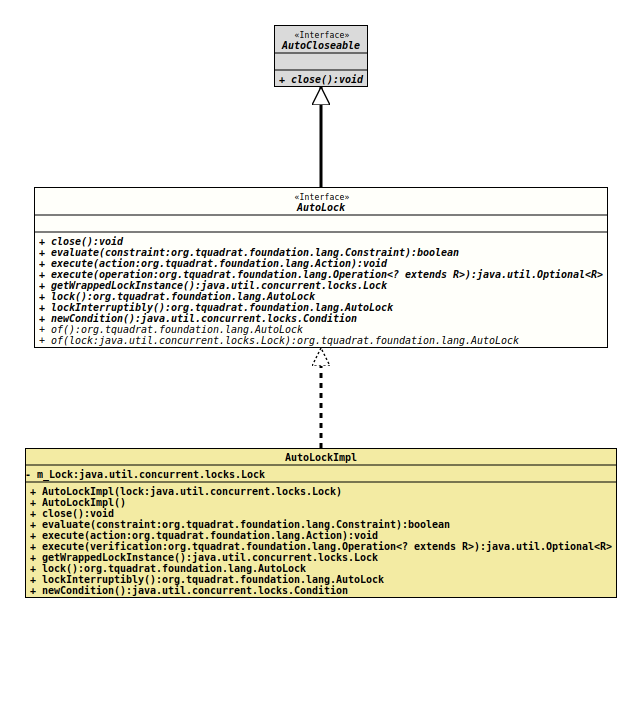

- All Superinterfaces:
AutoCloseable
- All Known Implementing Classes:
AutoLockImpl
@ClassVersion(sourceVersion="$Id: AutoLock.java 1097 2024-02-06 20:10:12Z tquadrat $")
@API(status=STABLE,
since="0.1.0")
public sealed interface AutoLock
extends AutoCloseable
permits AutoLockImpl
A wrapper for locks that supports the
try-with-resources feature of Java 7.
Instead of
m_Lock.lock();
try
{
…
}
finally
{
m_Lock.unlock();
}you can write now
private final AutoLock m_AutoLock = AutoLock.of();
…
try( final var ignored = m_AutoLock.lock() )
{
…
}The creation of the local reference to the wrapper object means some overhead but in very most scenarios this is negligible.
AutoLock will only expose the methods
lock()
and
lockInterruptibly()
of the interface
Lock,
but with a return value. Exposing other methods is not reasonable.
Calling
close()
on the AutoLock instance or
Lock.unlock()
on the wrapped Lock object inside the try block may cause
unpredictable effects.
- Author:
- Thomas Thrien (thomas.thrien@tquadrat.org)
- Version:
- $Id: AutoLock.java 1097 2024-02-06 20:10:12Z tquadrat $
- Since:
- 0.1.0
- See Also:
- UML Diagram
-

UML Diagram for "org.tquadrat.foundation.lang.AutoLock"
{kind=link}
-
Nested Class Summary
Nested ClassesModifier and TypeInterfaceDescriptionstatic final classThis exception is thrown when an operation fails. -
Method Summary
Modifier and TypeMethodDescriptionvoidclose()booleanevaluate(Constraint constraint) Evaluates the givenConstraintafter obtaining the lock, and returns its result.voidExecutes the given action after obtaining the lock.<R> Optional<R> Executes the given operation after obtaining the lock, and returns its result.Returns the wrapped lock.lock()CallslockInterruptibly()on the wrappedLockinstance.static AutoLockof()Creates a newAutoLockinstance with an internal lock object.static AutoLockCreates a newAutoLockinstance from the givenLockinstance.
-
Method Details
-
close
void close()- Specified by:
closein interfaceAutoCloseable
-
evaluate
Evaluates the givenConstraintafter obtaining the lock, and returns its result.- Parameters:
constraint- The constraint- Returns:
- The evaluation result.
- Throws:
AutoLock.ExecutionFailedException- The evaluation failed for some reason.
-
execute
Executes the given action after obtaining the lock.- Parameters:
action- The action.- Throws:
AutoLock.ExecutionFailedException- The action failed for some reason.
-
execute
Executes the given operation after obtaining the lock, and returns its result.- Type Parameters:
R- The type of the operation's result.- Parameters:
operation- The operation.- Returns:
- An instance of
Optionalthat holds the result of the operation. - Throws:
AutoLock.ExecutionFailedException- The operation failed for some reason.
-
getWrappedLockInstance
Returns the wrapped lock.- Returns:
- The wrapped lock.
-
lock
- Returns:
- The reference to this
AutoLockinstance.
-
lockInterruptibly
CallslockInterruptibly()on the wrappedLockinstance.- Returns:
- The reference to this
AutoLockinstance. - Throws:
InterruptedException- The current thread was interrupted while acquiring the lock (and interruption of lock acquisition is supported).
-
newCondition
Returns a newConditioninstance that is bound to the instance ofLockthat is wrapped by thisAutoLockinstance.- Returns:
- The new condition.
- Throws:
UnsupportedOperationException- The wrapped lock's implementation does not support conditions.- See Also:
-
of
Creates a newAutoLockinstance with an internal lock object.- Returns:
- The new instance.
-
of
Creates a newAutoLockinstance from the givenLockinstance.- Parameters:
lock- The wrapped lock.- Returns:
- The new instance.
-